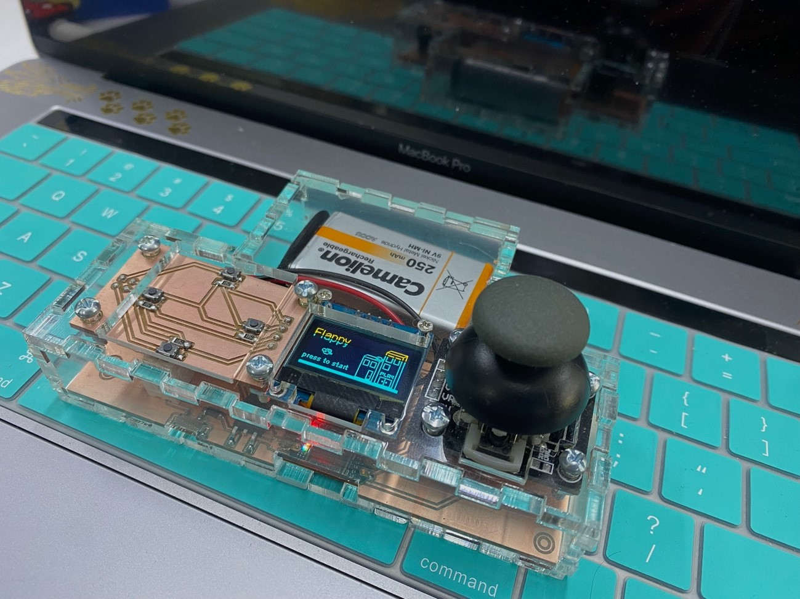

Welcome to Week 8
Electronics Design
Hey! now we will learn about Electronics Design .
Electronic design is the systematic process through which we create integrated circuits tailored to perform specific functions by leveraging electronic components.
First, as a group assignment, we will use test equipment, which we will see in the following image as well as the electronic components that we will use.
We will commence with testing using a multimeter.
To understand the functionality of the multimeter, we will initially examine the individual components before applying it to the board made during week 4 of electronic production. Our initial focus will be to determine the polarity of the Led.
What we must remember is to find out which side of each Led is negative and which is positive. For Dip Leds, the shortest leg is always negative, while the longest is positive, for SMD Leds, there is a green mark indicating the negative side; the opposite side is positive.
To check the Leds we will use the "DIODE TEST" option of the multimeter. This configuration helps us verify if the leds are working correctly or if they are already inoperative.
Here's the test we conducted with the SMD LED, demonstrating that its polarity is correct and it can be illuminated using our multimeter.
Next, we will proceed to test the resistors to determine their resistance values using the multimeter. To measure the resistance of our components, we will select the "Ω" symbol on the multimeter, which represents resistance. This configuration allows us to calculate the values accurately.
Now, we'll conduct a continuity test on the circuit board created during week 4 of the Fab Academy. It's crucial to ensure that the tracks on the board have continuity, indicating that they are properly connected. Using the multimeter, we'll select the continuity symbol. When the multimeter emits a sound, it confirms continuity, signifying that the components are connected. If no sound is emitted, it indicates a lack of continuity, suggesting that the components are not connected.
Now we will use the OSCILLOSCOPE that we have, we will test it on the board, taking as a reading the voltage output it produces, now we will see it on the equipment screen
Ok now let's move on to the individual assignment…
First I started thinking about what I could develop, my head was spinning with several ideas, however walking after work I saw a little boy playing with one of the toys that he wanted as a child but couldn't have it because I had most of my free time. He was available for additional readings and classes at school.
This toy is a pinball, which came with various games such as Tetris, cars, snake, among others.
I still remember when they came with their watch and calculator, what times.......
So, let's get to work! To achieve this idea, we will work with the Easy Eda program, in which we will develop the board, placing a screen in this case OLED, some buttons and of course a joystick to make it modern, with the help of the Seeed xiao RP2040.
Here we will be shown the components that we use, and we must position and connect them.
Your 3d model would look like this:
We will also make a small plate with 4 buttons that will help us in the various games that we are going to simulate.
We export to MODS CE:

Also the button plate:
After configuring and verifying our files in MODS CE, we will proceed to mill our board. We'll start by milling the traces followed by the perimeter of the board.
Let's see how our plate turns out
Ready, we already have the plates and they look good, let's continue with the soldering process
and by the magic of the academy..........
We already have our plate ready and it only cost us a couple of burns on our fingers.
It looked great, now let's design a case for our pinball, I will make it transparent so you can see the components
It looks good but let's cut it, I want to assemble it and see how great it looks.
The dark ones are in the acrylic protector. When we finish assembling, we remove it and you will see that it looks very good.
I managed to emulate the flappy game on the board. I will leave the files here, since there are several lines, it was somewhat complicated to find help to develop it until I saw Chinese tutorials, but it was done! Let's see how the game turned out
The game turned out well and I put in its battery so I could play it without having it connected to the computer, but the sensitivity is still very high so I calibrated the noise threshold values as well as the rise sensitivity and this is version 2 of the programming .
What I thought was achieved, all the files of this adventure you will find here, I hope that if you decide to do it you have as much fun as I did and it reminds you a little of the childhood that many of us put aside to give more time to our responsibilities
See you next Week.